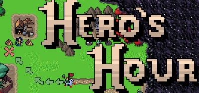

Hero's Hour
Динамичная пошаговая RPG-стратегия с боями в режиме реального времени.
Стройте города, набирайте армии, развивайте героев и изучайте мощные чары.
Исследуйте процедурно-сгенерированные карты и победите врагов прежде, чем они атакуют вас.